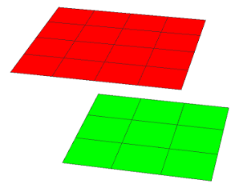

contextCount function
float contextCount(target, label)
target selector
| intra | Checks against labeled shapes in the same shape tree, that is, from the same initial shape. |
| inter | Checks against labeled shapes in other shape trees, that is, generated by other initial shapes in the neighborhood. |
| all | Checks both intra and inter. |
label string The context query is performed only on shapes that match the requested label. It must not be empty. If the label is empty, 0 is returned.
Returns the number of shapes with the given label. If no shape is found matching the specified label, 0 is returned.
A context query that returns the number of shapes with the specified label in the environment.
Learn more about important characteristics for context queries in conditions and inter context.
Each label operation does not label the current shape. Instead, it creates a new labeled shape that is counted separately.
Related
Example

Lot --> split(x) { ~1 : Split }*
Split --> split(z) { ~1 : Tile }*
Tile --> label("Tile") Color
Color --> case contextCount(intra, "Tile") <= 9 : color(0,1,0)
else : color(1,0,0)
In this example the Lot rule is applied to a single initial shape, using intra context. Depending on the size of the shape a different number of tiles is generated by the split operations. The contextCount query colors the tiles according to the total number of shapes with label "Tile".